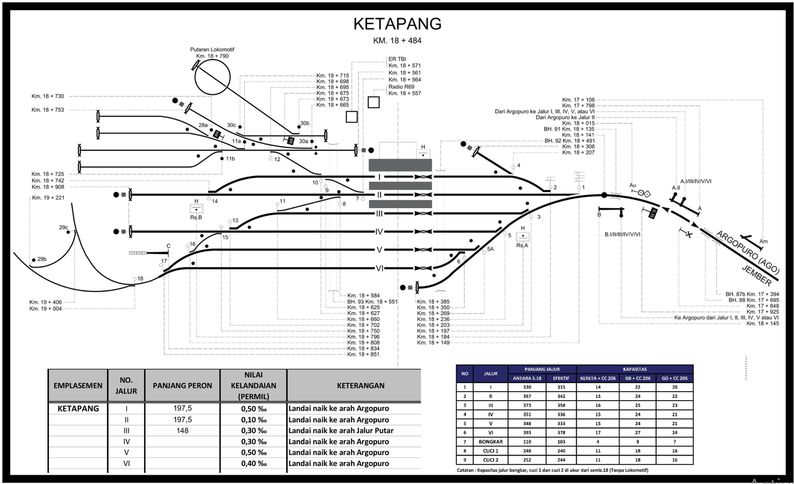

×
KAI
KETAPANG
🏠 Dashboard Utama
👥 Struktur Organisasi
🛤️ Emplasemen
☰
🕒
00:00:00 WIB
Layout Emplasemen Stasiun Ketapang
GAPEKA 2025
🖱️ Scroll untuk Zoom | Klik & Geser untuk memindahkan peta

+
−
🔄